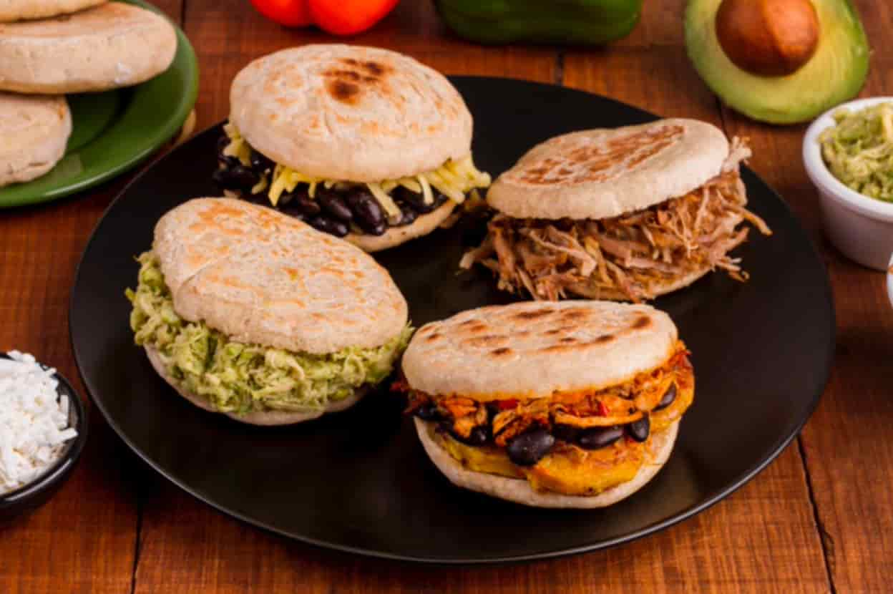

AREPAS VENEZUELANAS
Un cuento sobre Venezuela. ¡Arepas! ¿Las has probado? ¿Sabías que hay diferentes tipos? Reina Pepiada, Sifrina y Pelúa son algunas de las protagonistas de este cuento. ¡Una de ellas se creó en honor a una reina de belleza! Este libro inspira y representa la preservación de la cultura para las nuevas generaciones educadas lejos de la tierra natal de sus padres, abuelos y bisabuelos. Está escrito en formato bilingüe para los lectores principiantes del idioma opuesto al nativo y lleno de alegres ilustraciones para convertir la hora del cuento familiar en un viaje a Venezuela
- 800 gramos de harina de maí
- 500 mililitros de agua
- 1 cucharadita de sal
- 1 cucharadita de aceite
- Queso en lonchas
Cómo hacer Arepas venezolanas: 1-Echa el agua en un bol, añade la cucharadita de sal y disuélvela. Ve agregando la harina precocida de maíz poco a poco. Una vez la hayas echado toda, ve amasando hasta formar una masa homogénea.
2-Sigue amasando hasta que te quede completamente integrada. Déjala reposar por unos 5 minutos y retoma el amasado. Si, después de dejarla reposar, la masa está muy líquida o muy seca, añade más harina o agua respectivamente.
3-Forma bolitas medianas con la masa, con esta receta te saldrán unas 8 arepas. Comienza a aplanarlas con las palmas de las manos para hacer la forma tradicional de la arepa. Deben quedar de al menos 1 centímetro de grosor
4-Coloca una cucharadita de aceite en una plancha y extiéndelo sobre toda la superficie con ayuda de un papel de cocina. Calienta y lleva las arepas a la plancha. Cocina a fuego bajo hasta que veas que se han endurecido de un lado. Entonces, voltéalas y déjalas dorar por el otro lado.
Truco: Hay quienes las prefieren más gruesas o más delgadas, ¡prepáralas a tu gusto!